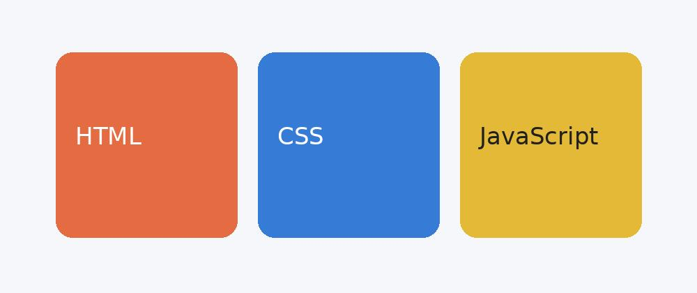

اسم الطالب: Ammar Ahmed Ali Badr
الرقم الجامعي: 2504241
المقرر: تطبيقات الإنترنت والمنصات الإلكترونية
العام الجامعي: 2026 / 2027
دلوقتي أغلب المواقع اللي بنستخدمها كل يوم مش مجرد كلام وصور بنقراها وبس. بنضغط على أزرار، وبنكتب بيانات، وبنشوف النتيجة قدامنا من غير ما نحتاج نفتح صفحة جديدة كل مرة. ومن هنا بيظهر دور لغة جافا سكريبت، لأنها من أهم الحاجات اللي بتخلي صفحة الويب تتفاعل مع المستخدم.
اخترت الموضوع ده لأنه قريب من أي حد بيبدأ يتعلم تصميم المواقع، وكمان بنشوف تطبيقاته في مواقع كتير زي المتاجر الإلكترونية ومواقع الدراسة. في التقرير ده هشرح الفكرة بشكل بسيط، وإيه الفرق بين جافا سكريبت وباقي لغات الويب، ومعاها أمثلة من اللي بنقابله في حياتنا اليومية.
جافا سكريبت هي لغة برمجة بنستخدمها عشان نضيف حركة وتفاعل لصفحات الويب. يعني بدل ما الموقع يعرض نفس المعلومات طول الوقت، يقدر يستجيب لحاجة المستخدم عملها، زي ضغطة زرار أو كتابة بيانات في خانة البحث. واللغة بتشتغل داخل المتصفح، وممكن كمان تستخدم خارج المتصفح في تطبيقات تانية.
عشان الصورة تبقى واضحة، نقدر نتخيل إننا بنعمل صفحة فيها زرار. لغة HTML بتحدد وجود الزرار والكلام المكتوب عليه، وCSS بتحدد شكله ولونه وحجمه، أما JavaScript فبتحدد إيه اللي يحصل لما المستخدم يضغط عليه. التلاتة بيكملوا بعض، لكن لكل واحدة دور مختلف.

| التقنية | وظيفتها | مثال |
|---|---|---|
| HTML | بناء محتوى الصفحة | إضافة عنوان أو زرار |
| CSS | تنسيق شكل الصفحة | تغيير الألوان والأحجام |
| JavaScript | إضافة التفاعل | إظهار رسالة عند الضغط على زرار |
لو كل مرة المستخدم احتاج يعرف معلومة اضطر يفتح صفحة تانية، استخدام الموقع هيكون أبطأ وأصعب. لكن لما الصفحة ترد على تصرفاته بشكل واضح، زي إنها تظهر رسالة أو تحدث جزء معين، التعامل معاها بيبقى أسهل. وده مش معناه إن كل حاجة لازم تتحرك، المهم إن التفاعل يكون مفيد ومفهوم.
جافا سكريبت بتتعامل مع أحداث بتحصل جوه الصفحة. الحدث ممكن يكون الضغط على زرار، أو الكتابة في حقل، أو اختيار عنصر من قائمة. أول ما الحدث يحصل، المتصفح يقدر يشغل تعليمات مكتوبة بجافا سكريبت، زي تغيير نص أو إظهار تنبيه.
مثلا لو في زرار مكتوب عليه "اعرض التفاصيل"، ممكن نبرمج الصفحة بحيث لما نضغط عليه يظهر جزء كان مخفي. ونقدر كمان نخلي الزرار يغير كلامه إلى "اخفي التفاصيل". كده المستخدم شاف نتيجة مباشرة من غير ما يسيب الصفحة.
أول مثال هو نماذج التسجيل. لما تكتب إيميل ناقص أو تسيب خانة مهمة فاضية، الموقع ممكن يظهرلك رسالة توضح المطلوب قبل إرسال البيانات. ده بيساعدك تصلح الغلط بسرعة، لكن الموقع برضه لازم يراجع البيانات على الخادم عشان الأمان.
المثال التاني هو سلة المشتريات. لما تضيف منتج، عدد المنتجات والإجمالي ممكن يتغيروا قدامك فورا. وفي مواقع التعليم، ممكن تضغط على سؤال فتظهر إجابته أو نتيجتك بعد الحل. كل دي أمثلة بتوضح معنى التفاعل بطريقة سهلة.
في حاجة اسمها DOM، وده ببساطة طريقة المتصفح في تمثيل عناصر صفحة الويب. جافا سكريبت تقدر تتعامل مع العناصر دي وتغير النصوص أو تضيف عناصر جديدة أو تخفي جزء من الصفحة. مش لازم نفهم تفاصيله كلها في البداية، لكن مهم نعرف إنه الوسيلة اللي بتخلي الكود يتعامل مع محتوى الصفحة.
لأ، لأن الموقع محتاج هيكل واضح وتصميم مناسب، وأحيانا محتاج خادم وقاعدة بيانات. جافا سكريبت بتساعد في التفاعل، لكن لازم نستخدمها في مكانها الصح. وكمان لو استخدمنا أكواد كتير من غير تنظيم، ممكن الصفحة تبقى أبطأ أو أصعب في الصيانة.
تخيل إننا عاملين صفحة صغيرة فيها سؤال: "هل عجبك الموقع؟" وتحت السؤال زرارين "نعم" و"لا". نقدر نخلي جافا سكريبت تستقبل الضغطة وتظهر رسالة مناسبة. لو ضغطت "نعم" تظهر "شكرا على رأيك"، ولو ضغطت "لا" تظهر خانة تكتب فيها اقتراحك. الفكرة مش معقدة، لكنها بتبين إزاي صفحة عادية تتحول لتجربة فيها تواصل مع المستخدم.
مش كل تفاعل معناه تجربة كويسة. المفروض الأزرار تكون واضحة، والرسائل مفهومة، والموقع يشتغل بشكل مناسب على الموبايل والكمبيوتر. كمان مينفعش نعتمد على جافا سكريبت بس في حماية بيانات المستخدم، لأن التأكد من البيانات المهمة لازم يحصل على الخادم كمان.
في النهاية، جافا سكريبت من اللغات الأساسية في تطوير الويب، لأنها بتخلي الموقع مش مجرد صفحة ثابتة، لكن صفحة بتستجيب للي المستخدم بيعمله. ومن الأمثلة اللي اتكلمنا عنها، زي الأزرار ونماذج التسجيل وسلة المشتريات، نقدر نفهم إن الفكرة الأساسية هي تسهيل التعامل مع الموقع.
ومن وجهة نظري، أفضل طريقة لتعلمها هي تجربة أمثلة صغيرة وفهم كل مثال بيعمل إيه، وبعد كده نبدأ نعمل صفحات أكبر خطوة بخطوة.